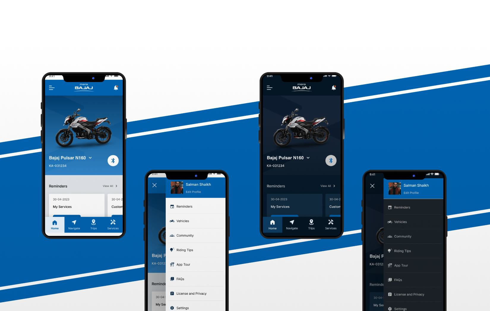
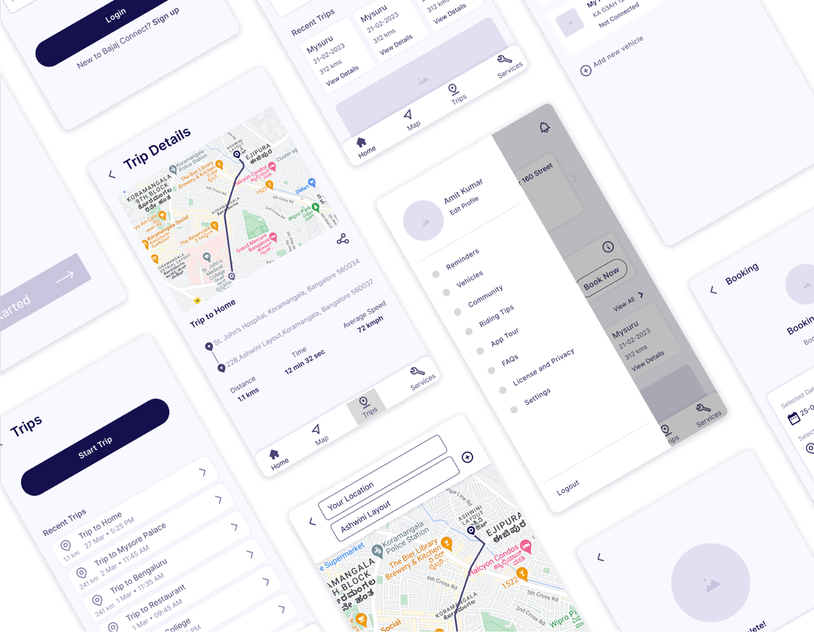
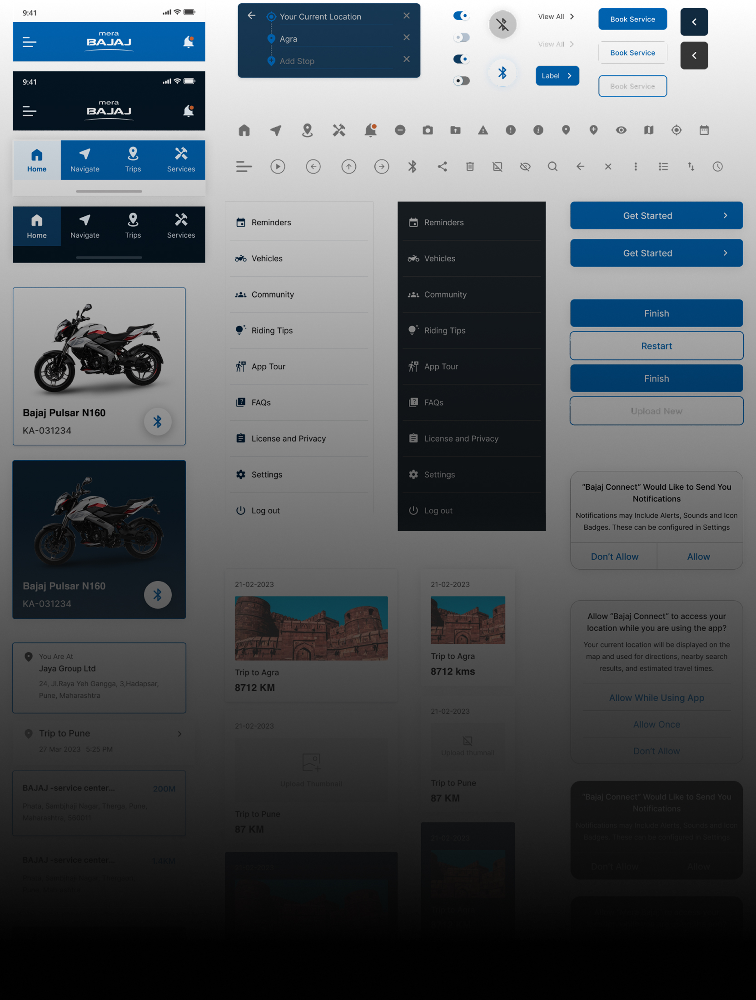
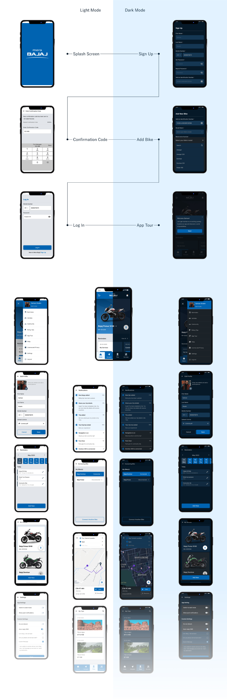

Designing the after-sales ownership experience for Bajaj motorcycle riders
A research-led mobile app redesign that connects millions of riders to service, community, and the brand — built on ethnographic fieldwork across Tier 1, 2, and 3 cities in India.

Brief
Bajaj Auto needed to strengthen the digital relationship with riders after the sale — moving beyond transactional service booking toward a platform that reflects real ownership rituals, trust in local mechanics, and pride in the brand.
Peepal partnered with Bajaj to run deep qualitative research, map the ownership journey end-to-end, and redesign the mobile experience so it feels native to how riders actually live with their motorcycles.
Challenge
The goal was to improve task success and satisfaction without alienating long-time users of legacy flows. Riders span vastly different contexts: daily commuters, weekend tourers, and first-time buyers with different mental models of “service” and “community.”
We had to craft a distinctive experience that improves discoverability of critical actions, simplifies navigation across modules, and keeps usability paramount — while aligning with technical constraints and partner integrations.

Discover
Workshops & field immersion
We began with stakeholder workshops to align on business goals, analytics blind spots, and hypotheses from the product team. Parallel to that, we conducted contextual inquiry with riders at home, workplaces, and service touch points to observe behaviour rather than opinions alone.
Understanding expectations
We explored who uses the app today, who avoids it (and why), and what would earn a second visit after a poor prior experience. Comparative analysis with adjacent mobility apps helped us identify patterns that build trust versus those that feel like marketing noise.
Define
Together with Bajaj, we articulated the product promise: a calm, confident companion for ownership — fast when you need a booking, rich when you want to explore community and learning content.
From research, we defined the core problem statements, mapped primary jobs-to-be-done, and prioritised a backlog of UX opportunities that informed information architecture, onboarding, and the service booking happy path.
Personas
To design a seamless experience for each user group, we identified distinct motivations and designed pathways that respect how each rider approaches the product.
“I use the app when something goes wrong — I need clarity, not clutter.”
Practical owner
- Book service quickly with transparent pricing
- Track status without calling the dealership
- Modular home that balances utility and discovery
- Strong recovery states and offline-friendly cues
“I want the app to feel like the brand I proudly ride — not a generic utility.”
Community-oriented rider
- Discover rides, tips, and curated stories
- Share milestones with a like-minded community
- Progressive disclosure for advanced features
- Personalised entry points based on bike model
“I’m new to riding — I need guidance, not jargon.”
New rider
- Understand maintenance intervals in plain language
- Build confidence before visiting a service centre
- Educational snippets at the point of need
- Guided onboarding tied to real tasks
Prototype
We iterated on scalable wireframes keyed to primary navigation and task models. Purchase and service confidence were reinforced through predictable patterns, clear hierarchy, and progressive depth on product-adjacent content.

Design System
Colours & typography
We extended Bajaj’s established brand system for digital surfaces — prioritising legibility in sunlight, tap targets for gloved hands, and accessible contrast for critical actions.
Inter · Research-first UI
Headings at 600 weight for scanability; body copy at 400 with comfortable line height for long-form education inside the app.

Final UI
Key surfaces after visual design — focused on clarity of hierarchy, resilient components, and a cohesive motion language for transitions between utility and discovery.

Impact
The programme connected research evidence directly to interaction decisions — reducing ambiguity for riders at high-stress moments and creating room for brand storytelling when curiosity is high.
Outcome metrics, methodology details, and client testimonials should be added here to match your public case study standards.